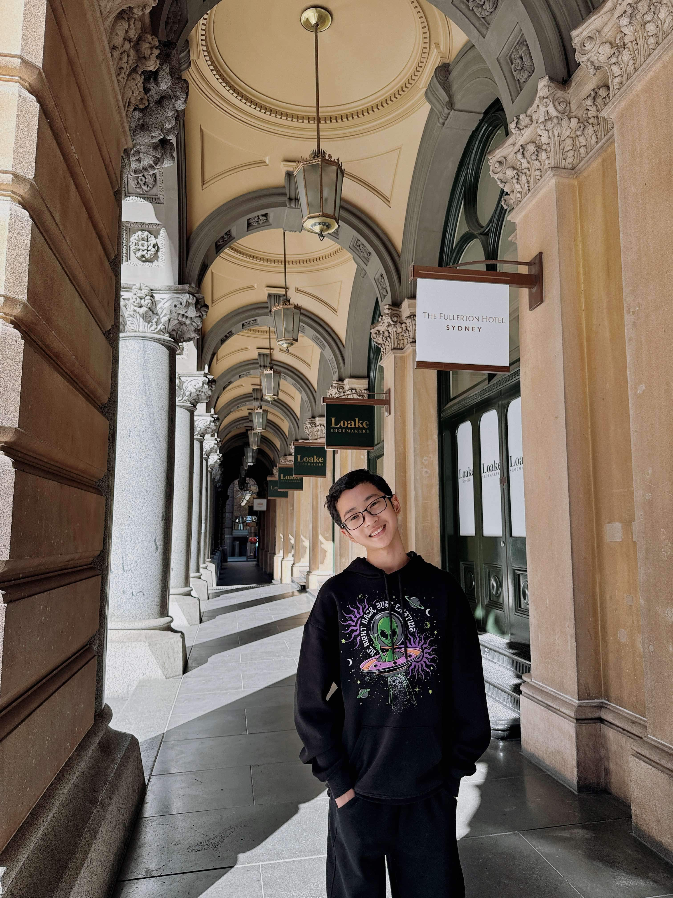

Hello!
Welcome to my blog about Vietnamese dessert! My name is Jason Pham. I was born and raised in Vietnam, and now live in Australia. Living in Australia, I really missed a lot of traditional favours from my home country. My cousin and I tried to recreate that Vietnamese desserts favours for our family. It was a fantastic experience!!
In this blog, I will share my passion for Vietnamese foods. They are delicate, colourful, and extremely nostalgic, bringing back memories of my childhood.
I want to share my family recipes, try out new variations, and most importantly, highlight the beauty of Vietnamese desserts in this blog.
I hope you find joy and inspiration in my blog.
Whether you're Vietnamese looking for a connection to your family roots or you are a person who LOVES dessert, stay tuned and let's work together to create something delicious!
